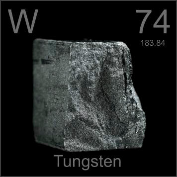

HOME
PREVIOUS
NEXT

Tungsten
Atomic Weight: 183.84
Density: 19.25 g/cm3
Melting Point: 3422 °C
Boiling Point: 5555 °C
Tungsten is extremely hard to melt, so when large pieces are needed it is often sintered into solid form from loose powder, like this cube. The biggest application by far is tungsten wire for incandescent light bulbs.